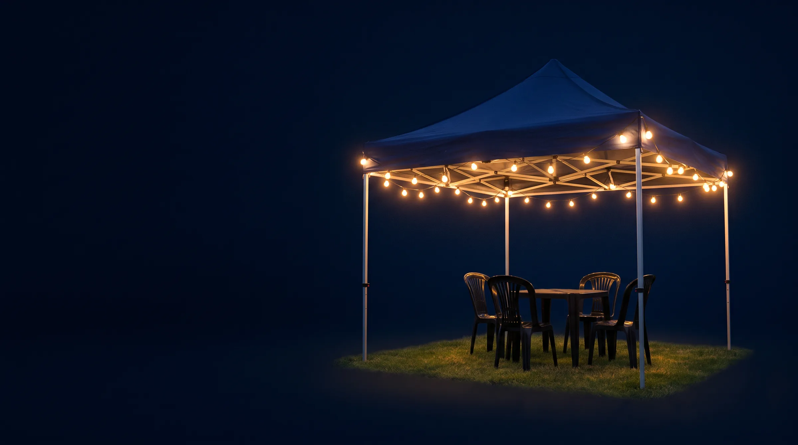
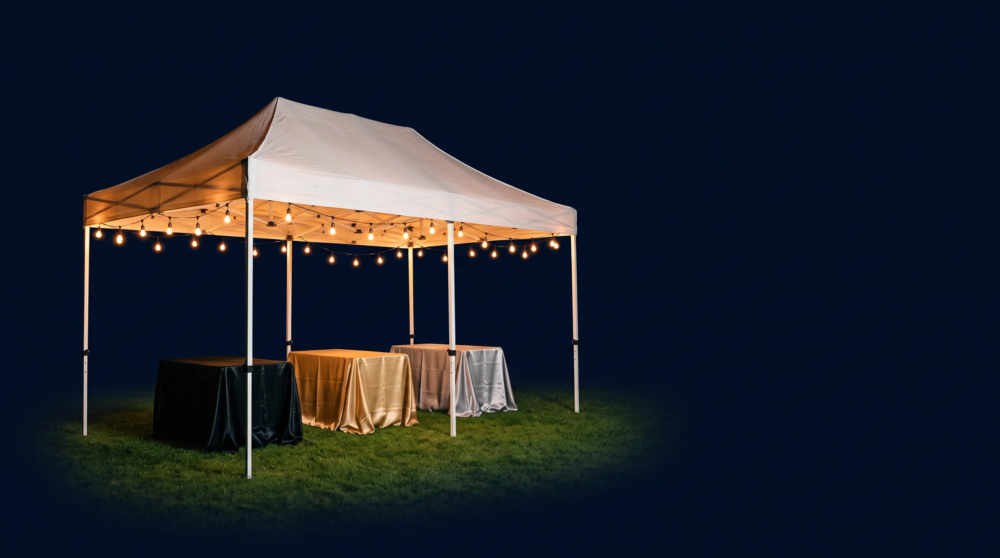
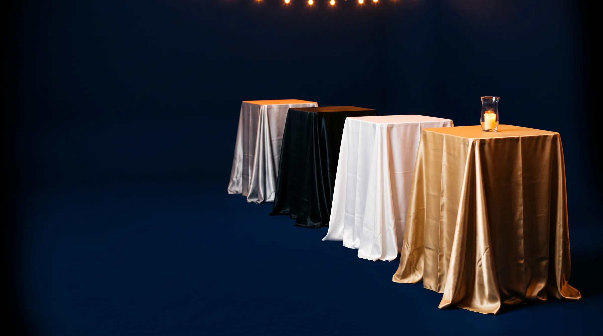
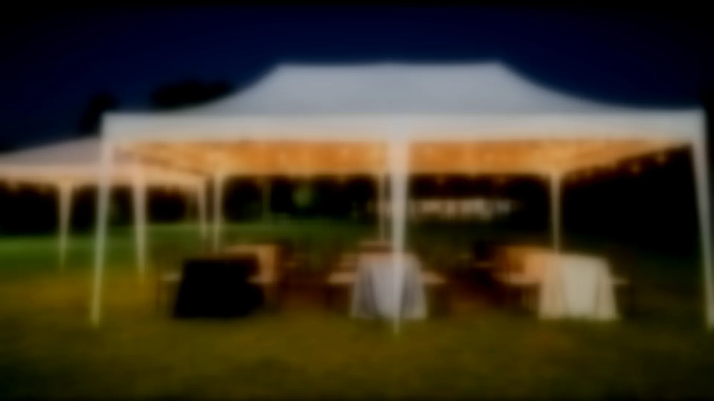
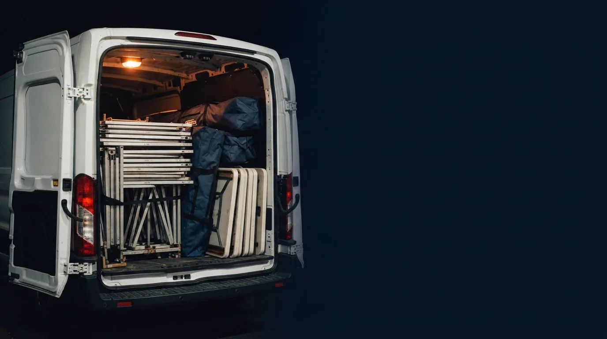
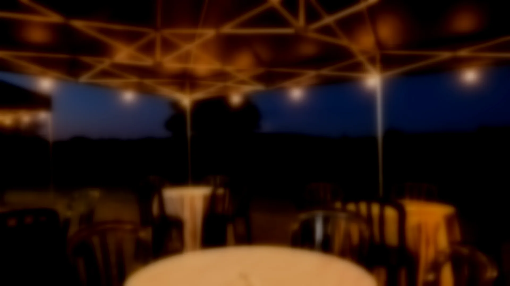

Festa no quintal ou na chácara
Aniversários, churrascos e encontros de família no gramado, com cobertura para as mesas e para a comida.

OrçamentoLocação de tendas, mesas e forros em Goiânia e região
Tendas azul-marinho de 3x3 m e 6x3 m com estrutura de alumínio, mesas e forros nas cores preto, branco, dourado e prata. Tudo para montar o espaço da sua festa no quintal, na chácara ou na rua.
Envie a data, o bairro e a quantidade de convidados para consultar valores e disponibilidade.

A tenda quadrada resolve o lugar que precisa de sombra ou de proteção contra o sereno: a mesa do bolo, a churrasqueira, o buffet, a entrada da festa ou a área das crianças.
Boa para: mesa do bolo, buffet, churrasqueira, recepção e pequenas reuniões.
Orçamento da tenda 3x3
Com o dobro da área da 3x3, a tenda retangular cobre uma fileira de mesas com os convidados sentados. É a escolha para quem vai fazer a festa no gramado e não quer depender do tempo.
Boa para: área das mesas, festa no quintal, chácara, confraternização e feira.
Orçamento da tenda 6x3
Alugue as mesas quadradas de plástico preto, com as cadeiras, já com forro de tecido até o chão. Escolha uma cor para todas ou combine duas, como preto e dourado ou branco e prata.
Informe quantas mesas e quais cores você quer para consultar a disponibilidade na sua data.
Escolher mesas e forros
Aniversários, churrascos e encontros de família no gramado, com cobertura para as mesas e para a comida.
Forros dourado, prata ou branco para a mesa dos convidados e uma tenda 3x3 para o bolo e os doces.
Confraternizações, estandes, pontos de atendimento e eventos de igreja, escola ou comunidade.

Tenda não cabe no porta-malas. Por isso a LOCMESAS leva tudo até o endereço da festa, monta as tendas e arruma as mesas com os forros antes de você começar a receber.
Depois do evento, voltamos no horário combinado para desmontar e recolher. Você não precisa carregar nada.
Agendar a montagemEnvie a data, o bairro ou cidade e o número de convidados. Diga se já sabe o tamanho da tenda e as cores de forro.
Indicamos a tenda e a quantidade de mesas para o seu espaço e confirmamos a disponibilidade na data.
No dia combinado, levamos as tendas, as mesas e os forros e deixamos tudo montado.
Depois do evento, desmontamos e recolhemos tudo no horário agendado.
Atendemos Goiânia e cidades da região com entrega, montagem e retirada de tendas, mesas e forros.
Envie a localização do evento pelo WhatsApp para confirmar o atendimento no seu endereço.
Consultar meu endereçoA 3x3 m é indicada para cobrir um ponto da festa, como a mesa do bolo, o buffet ou a churrasqueira. A 6x3 m tem o dobro da área e cobre as mesas dos convidados. Conte quantas pessoas vão estar na festa e ajudamos a escolher.
Sim. Levamos as tendas até o endereço do evento, montamos e, depois da festa, desmontamos e recolhemos no horário combinado.
Pode. Tendas, mesas e forros podem ser alugados juntos ou separados. Informe no atendimento o que você precisa.
Temos forros nas cores preto, branco, dourado e prata. Você pode usar uma cor só ou combinar duas na mesma festa.
Atendemos Goiânia e região. Envie a cidade e o endereço do evento para confirmar o atendimento e as condições de entrega.
O valor depende dos itens, das quantidades, da data e do endereço. Envie os detalhes do evento pelo WhatsApp e mandamos o orçamento.
Assim que tiver a data e o local definidos. Nos fins de semana as tendas costumam ser reservadas antes, então quanto antes você consultar, melhor.

Tendas, mesas e forros entregues e montados no seu endereço, em Goiânia e região.
Para agilizar, envie: data do evento + bairro ou cidade + número de convidados.